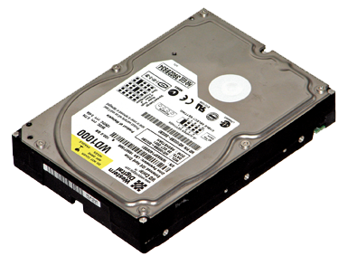
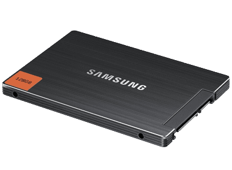

Data storage is handled for the most part by either an HDD or if you have one an SDD.
Each of these drive types has their benefits and their disadvantages.
HDDs which stands for Hard Disk Drives come in several types.
HDDs most common types are 3.5" or 2.5".
The 2.5" HDD is typically used in laptop computers.
The 3.5" is the standard for use in desktop computers and servers.
The 3.5" HDD has the benefit of larger capacity and in your standard capacity sizes can range from 80gb to 4tb.
The 3.5" HDD can come in sizes larger than 4tb but the most common are 4tb and below.
SSD which stands for Solid State Drive is becoming very popular as an addition to or an alternative to an HDD.
The SSD has the benefits of much faster access times thus things such as programs and your operating system will load faster and it is silent because it has no moving parts.
An SSD while faster does not yet match the capacity of the HDD but they are moving in that direction very quickly and soon the HDD may be obsolete technology.
Until that happens the usual setup for a new PC is an SSD for your operating system and your programs and a secondary drive of an HDD to store all your files and data.
All of these drives will be connected via SATA which stands for Serial Advanced Technology Attachment and is the standard used to attach most internal components such as HDDs, dvd drives etc.
If you wanted to know if a hard drive will work in your system if both were made in the last 10 years the answer is yes.
As I said SATA is the port type but it is also an industry standard that all manufacturers adhere to so port compatibility will not be an issue.
However you may lose some speed on your transfer rates do to the system down clocking your port speed because say your using a SATA3 on a motherboard that is only able to use a SATA2 there fore the system will down clock your faster SATA3 to the speed of a SATA but it will still work.
That said where you can have a problem is not with the hardware compatibility but with the software compatibility namely your operating system and your motherboard bios.
If you are still using Windows XP which you shouldn't be you may need to update the service pack patches to get a a drive above 2gb to register all the capacity of the drive.
If you have an older computer your motherboards BIOS or Basic Input Output System may not recognize the drive size on a larger drive correctly or may not recognize it at all in which case you would have to go to the motherboard vendors web site and download the latest BIOS version for your motherboard and then flash your BIOS.
A WORD TO THE WISE.
Read the directions carefully before you attempt to flash your BIOS.
If for some reason you cancel your BIOS update mid flash or if you PC loses power your motherboard may no longer work so make certain you follow directions to the letter or be prepared to buy a new motherboard.
How much space is too much space?
There is no such thing as too much space in my opinion.
It is common practice to use what were given so if you have 200gb of space your going to find enough stuff to fill that 200gb of space.
There for if you give yourself more space to work with than you think you could ever possibly fill you will fill it but it will take some time.
As far as what size drives will be the minimum size I would recommend.
If you are going the recommended route of using an SSD and an HDD in conjunction then I would say that a 64gb SSD and a 1tb HDD would be the baseline.
You can also go with a 16gb or a 32gb SSD but I have found that the operating system takes up most of that and then once you start adding programs to that it fills up too quickly so spend the little bit more cash and get at least a 64gb drive for the operating system and program installs.
I would recommend you build your computer with both an SSD and an HDD because it gives you all the benefits of super fast loading times and you don't lose the seemingly endless space to store things that we had all grown accustom to over the last 5 to 10 years as HDD sizes have gotten larger.